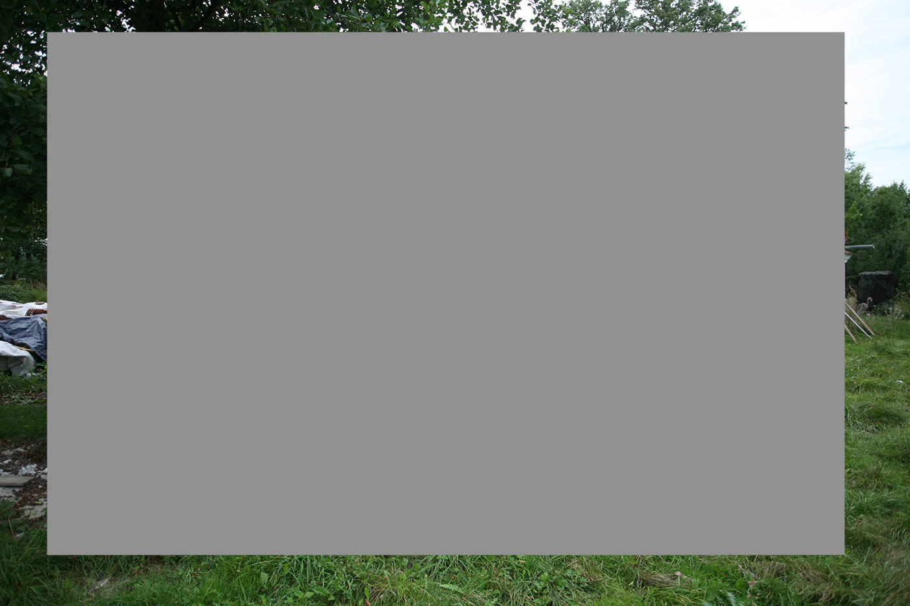

-

-


Kaple Panny Marie Bolestné v Nesvačilce
Mariiny bolesti tvořící prostor kaple
Myšlenkové a prostorové ztvárnění kaple je vyjádřeno grafickým schematem. Díky tomu prvky prostoru nemají symboliku a obsah, ale obsah a význam jako celek má prostor sám. „Pozemskou část“ chrámu tvoří živelně vyskládané kameny lehce převyšující návštěvníka. Jsou pozemské stejně jako my. V tomto soklu (v nás) mají původ Mariiny bolesti. Protínají prostor v podobě surových trámů a směřují do jasného kruhového otvoru ve stropě, „k Bohu“. Jedním z trámů je i onen kříž, pod kterým stála Panna Maria. „Vznáší se“ v prostoru v ose kněžiště a svou orientací v interiéru směřuje ke svatostánku pod ním. Celý prostor nad kameny je obalen lehce působícím závojem Mariiných slz tvořených jemnými vertikálními okny a dřevěnou konstrukcí.
Můžeme tedy rozdělení prostoru chápat jako část pozemskou (kamennou) a nebeskou (dřevěnou). Což platí i v exteriéru, kde dřevěná část je tvořena modřínovou fasádou, která se časem zbarví do stříbřitého odstínu. Symbolika materiálového řešení našla svůj výklad i u místního kronikáře a velkého nesvačilského patriota pana Víta Lízala staršího: "Stavíme z něčeho, co zde vždy obyvatelům chybělo - kámen a dřevo, pro ""něco"" co zde také chybí - víru, pro kterou si musíme chodit do sousedních obcí."
Nad otvorem ve stropě je umístěn sanktusník (věžička), kterým je prostor nepřetržitě osvětlován, tudíž světlo od Boha k nám přichází ve dne i v noci. V útrobách sanktusníku je navíc umístěn světelný zdroj osvětlující podlahu kaple – prostor pro věřící a kněžiště. V oknech vnějšího pláště – závoji – budou skrytě umístěny světelné zdroje, které budou po západu slunce vnitřní prostor jemně osvětlovat a zároveň vytvářet vizuální stránku kaple jako dominantu v krajině.
Mnoho lidí již dnes, kdy je hotový pouze kamenný sokl, na staveniště rádo zavítá. Často jsou překvapeni atmosférou místa završeného šest metrů vysokým dřevěným křížem, který místní před započetím stavby vztyčili. Od té doby se snaží místo kaple kultivovat. Zajímavé je, že Nesvačilka má jako ulicová barokní vesnice zachovalé humno, dokonce by se dalo říci opečovávané. Navíc v okolí vznikají nové polní cesty lemované alejemi. Krajina působí, že je systematicky kultivována, což je málo vídaný jev v českých krajích.
Hlavní ulice obce mírně stoupá k návrší s kaplí. Tím se struktura vesnice logicky uzavírá i v návaznosti na humna. Předprostor kaple bude tvořit jabloňová alej vedoucí od silnice. Zadní přístup bude tvořit pěšina jabloňovým sadem, který mají příchozího zklidnit, vytrhnout z každodenního shonu a připravit na vstup do kaple. Při příchodu ke kapli se člověk ocitne v kruhu čtrnácti jabloní se zastaveními křížové cesty - “vnějším interiérem kaple”- chráněným jabloněmi se širokými výhledy do krajiny, který vybízejí k rozjímání.
Moderní technologie versus tradiční řemesla
Chrám Boží je něco co by mělo být nadčasové, co by mělo přetrvat věky, stejně jako živý chrám Boží - církev - naše společenství. Křesťanství je zakořeněno v naší společnosti a Bůh s námi prošel všemi strastmi přes mnoho staletí. Dříve jsme byli zvyklí Bohu více věřit, cítit ho u sebe v srdci, než o něm přemýšlet. Tradiční řemesla též pracují s citem, s citem pro materiál, který s moderními technologiemi vymizel a k materiálu je přistupováno jen v rámci základních obecných pravidel. Například středověké dřevěné konstrukce jsou mnohem více principielně konzistentní než ty současné. Práce se obejde bez vrutů a dalšího kovového spojovacího materiálu. Je to čistě jen dřevo, nevznikají tepelné mosty a vyhnívání u kovových součástí. Konstrukce stárne jako celek a navíc mnohem pomaleji. Tesaři ctili materiál, trámy bývaly ručně tesané sekerami, výběr stromu dimenzemi odpovídal potřebnému trámu a byl těžen v zimě, kdy bylo zaručeno, že většina mízy je v kořenech. O oživení starých řemesel se snažíme v Nesvačilské kapli.
Jedním z východisek návrhu bylo navázat na tradice (proti kterým komunismus tolik bojoval) a zároveň je spojit se současnými technologiemi. Bůh nás totiž také stále překvapuje, hledá nové možnosti, kombinace. Je pro nás stále něčím novým, nekonečnou inspirací. Koncepčně kaple vychází především z baroka a gotiky. V těchto slozích se uplatňuje vynikající práce se světlem, počítá se s Bohem jako východiskem všeho. V gotice nás nejprve nás všechny převyšoval, v baroku nás zahrnul strhující podívanou, překvapeními, gradací, divadlem. Návrh však nekončí gotikou ani barokem. Hledá nové možnosti využití těchto principů za použití současnějších výrazových prostředků a o totéž se snaží i v konstrukčním řešení. Díky shodě náhod se k vypracování připojil Vít Mlázovský, expert na středověké konstrukce, autor středověkého jeřábu na hradě Točník či dřevěného mostu na hradě Krakovci, který se dlouhodobě věnuje rekonstrukcím zásadních českých památek, ale též spolupracuje na návrzích současných, které se snaží oživit tradiční postupy výstavby a zahájit tím dialog s moderní architekturou.
Pan Mlázovský koncepční principy návrhu rozvinul a přenesl je do konstrukčního řešení stavby.
Nosnou konstrukci stěn “nebeské” části navrhl jako lamelovou konstrukci pohledovou z interiéru. Běžně se tento princip konstrukce používá pro zastřešení hal od počátku 20. století. Krásným příkladem je hangár Aeroklubu v Rakovníku z padesátých let. U nás tento způsob vymizel spolu s úpadkem řemesel v době komunismu. V Nesvačilce bude obdobná konstrukce užita vertikálně. Stěny budou tedy tvořeny z jednoho tisíce přibližně dvoumetrových fošen. Pan Mlázovský spolu s tesařem Petrem Růžičkou stojí za obnovou tradičních řemesel a na takovouto konstrukci se i dnes najdou schopní lidé. Vzhledem k vejčitému tvaru budou jednotlivé prvky vyrobeny na pomezí klasické tesařiny a moderního CNC obrábění. Sestavení bude klasicky tesařské na čepy a ukotvení pomocí klínků. Z konstrukčního hlediska je tedy vytvoření “závoje Mariiných slz”, jemného hávu obklopujícího prostor, velkou výzvou.
Nosná dřevěná schránka kaple je celá z fošen a bude tvořit jemný rastr na pozadí “Bolestí Mariiných” - sedmi trámů protínajících celý prostor. Jedlové trámy byly již zhotoveny v dubnu 2014 a darovalo je sedm kněží. Jsou jediným masivním dřevěným prvkem v prostoru, mají být expresivním spojením nás s Bohem, tou cestičkou, kterou nám Maria prošlapala, pro nás vytrpěla. Proto se přistoupilo k tradičnímu ručnímu tesání trámů, kdy se přímo po skácení stromu ještě v lese dřevo postupně opracovávalo pouze sekerami (přiřezáním motorovou pilou by došlo k poškození struktury dřeva). Tesaři pod vedením tesaře a kameníka Davida Šebesty vyučení mistrem Růžičkou pracovali replikami historických nástrojů. Výroba trámu by ale moderními technologiemi ani možná nebyla, jsou totiž 15 m dlouhé a po délce kónické.
Kamenný sokl vznikal déle než tři měsíce od letošního května pod vedením mistra kamenického Davida Šebesty. Materiálem byla rosická rula, kámen teplých zemitých odstínů, který přirozeně doplňuje barvu okolních polí. Každý kámen projde kameníkovi rukama několikrát za dobu stavby při hledání správného umístění. Je zde patrný rukopis každého z autorů - kameníků. Důležité je, aby všichni ctili systém zdění na ložné spáry a tím docílili spořádaného dojmu. Je to podobné jako s námi lidmi, našim společenstvím, společností. Těžko opracovatelné kameny - bytosti mají svoje místo pod sluncem v harmonickém celku, ve společné víře.
V neděli 13. září proběhla poutní hodová bohoslužba poprvé v místě kaple a v davu přítomných byla cítit radost z odvedené práce a také velké očekávání dalšího průběhu budování. Hodová mše celebrovaná p. Reném Strouhalem tak opustila své tradiční místo u kapličky Panny Marie Bolestné na návsi a zavítala na návrší nad obcí k novostavbě, kde pomalu místní věřící nacházejí útočiště pro svou duši. Po obřadu byl na místě odhalen základní kámen požehnaný 27. září 2009 svatým otcem Benediktem XIV. při bohoslužbě v Brně-Tuřanech. Byl na místě zabudován do kamenného soklu.
Byla též zahájena adopce jabloní pro sad. 35 stromů bylo prodáno během několika dní. Nyní se objednají u sadaře staré dlouhověké triploidní odrůdy, např. Jeptiška nebo Kardinál žíhaný, a příští podzim proběhne výsadba.
| Klient | Řimskokatolická farnost Moutnice |
| Lokace | Nesvačilka, Česká republika |
| Typologie | sakrální stavby |
| Typ | novostavba |
| Rok | 2012 - dosud |
| Status | ve výstavbě |
| Užitná plocha | 147 m² |
| Velikost | |
| Náklady | 14 000 000 Kč |
| Autoři | MgA. Jan Říčný |
| Spoluautoři | ing. arch. Michal Říčný |
| Odborná spolupráce | statika: Ing. Vít Mlázovský, Ing. Filip Chmel |